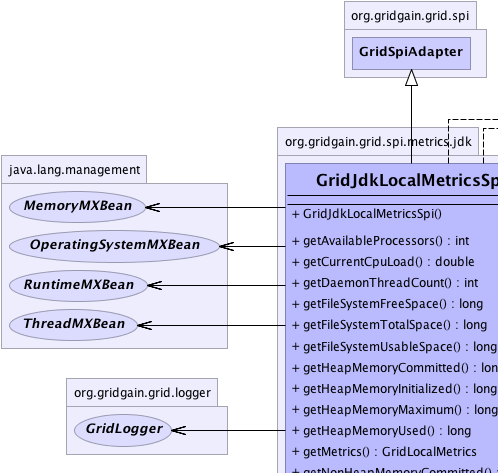
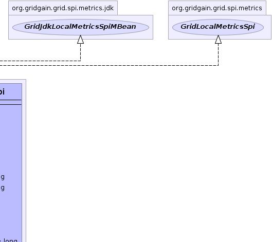
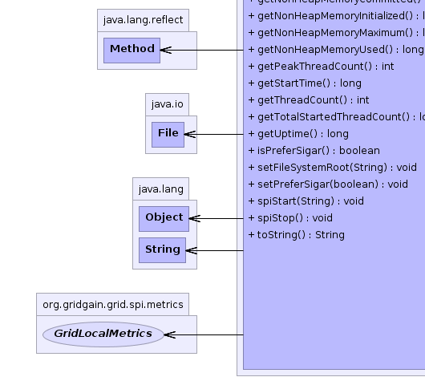

org.gridgain.grid.spi.GridSpiAdapter
org.gridgain.grid.spi.metrics.jdk.GridJdkLocalMetricsSpi
org.gridgain.grid.spi.GridSpiAdapter
org.gridgain.grid.spi.metrics.jdk.GridJdkLocalMetricsSpi
|
GridGain™ 3.1.1c
Community Edition |
|||||||||
| PREV CLASS NEXT CLASS | FRAMES NO FRAMES | |||||||||
| SUMMARY: NESTED | FIELD | CONSTR | METHOD | DETAIL: FIELD | CONSTR | METHOD | |||||||||
java.lang.Object
@GridSpiInfo(author="GridGain Systems, Inc.",
url="www.gridgain.com",
email="support@gridgain.com",
version="3.1.1c.14072011")
@GridSpiMultipleInstancesSupport(value=true)
public class GridJdkLocalMetricsSpiThis class provides JDK MXBean based local VM metrics. Note that average CPU load cannot be obtained from JDK 1.5 and on some operating systems (including Windows Vista) even from JDK 1.6 (although JDK 1.6 supposedly added support for it). For cases when CPU load cannot be obtained from JDK, GridGain ships with Hyperic SIGAR metrics.
If CPU load cannot be obtained either from JDK or Hyperic, then
GridLocalMetrics.getCurrentCpuLoad()
method will always return -1.
GridJdkLocalMetricsSpi.setPreferSigar(boolean))
| Wiki | |
| Forum |
|  |  |
|  |
| Constructor Summary | |
|---|---|
GridJdkLocalMetricsSpi()
|
|
| Method Summary | |
|---|---|
int |
getAvailableProcessors()
Returns the number of processors available to the Java virtual machine. |
double |
getCurrentCpuLoad()
Returns the system load average for the last minute. |
int |
getDaemonThreadCount()
Returns the current number of live daemon threads. |
long |
getFileSystemFreeSpace()
Returns the number of unallocated bytes in the partition. |
long |
getFileSystemTotalSpace()
Returns size of the partition. |
long |
getFileSystemUsableSpace()
Returns the number of bytes available to this virtual machine on the partition. |
long |
getHeapMemoryCommitted()
Returns the amount of heap memory in bytes that is committed for the Java virtual machine to use. |
long |
getHeapMemoryInitialized()
Returns the amount of heap memory in bytes that the Java virtual machine initially requests from the operating system for memory management. |
long |
getHeapMemoryMaximum()
Returns the maximum amount of heap memory in bytes that can be used for memory management. |
long |
getHeapMemoryUsed()
Returns the current heap size that is used for object allocation. |
GridLocalMetrics |
getMetrics()
Provides local VM metrics. |
long |
getNonHeapMemoryCommitted()
Returns the amount of non-heap memory in bytes that is committed for the Java virtual machine to use. |
long |
getNonHeapMemoryInitialized()
Returns the amount of non-heap memory in bytes that the Java virtual machine initially requests from the operating system for memory management. |
long |
getNonHeapMemoryMaximum()
Returns the maximum amount of non-heap memory in bytes that can be used for memory management. |
long |
getNonHeapMemoryUsed()
Returns the current non-heap memory size that is used by Java VM. |
int |
getPeakThreadCount()
Returns the peak live thread count since the Java virtual machine started or peak was reset. |
long |
getStartTime()
Returns the start time of the Java virtual machine in milliseconds. |
int |
getThreadCount()
Returns the current number of live threads including both daemon and non-daemon threads. |
long |
getTotalStartedThreadCount()
Returns the total number of threads created and also started since the Java virtual machine started. |
long |
getUptime()
Returns the uptime of the Java virtual machine in milliseconds. |
boolean |
isPreferSigar()
Configuration parameter indicating if Hyperic Sigar should be used regardless of JDK version. |
void |
setFileSystemRoot(String fsRoot)
Set file system root. |
void |
setPreferSigar(boolean preferSigar)
Configuration parameter indicating if Hyperic Sigar should be used regardless of JDK version. |
void |
spiStart(String gridName)
This method is called to start SPI. |
void |
spiStop()
This method is called to stop SPI. |
String |
toString()
|
| Methods inherited from class org.gridgain.grid.spi.GridSpiAdapter |
|---|
assertParameter, configInfo, createSpiAttributeName, getAuthor, getConsistentAttributeNames, getGridGainHome, getLocalNodeId, getName, getNodeAttributes, getSpiContext, getStartTimestamp, getStartTimestampFormatted, getUpTime, getUpTimeFormatted, getVendorEmail, getVendorUrl, getVersion, injectables, onContextDestroyed, onContextInitialized, registerMBean, setJson, setName, startInfo, startStopwatch, stopInfo, unregisterMBean |
| Methods inherited from class java.lang.Object |
|---|
clone, equals, finalize, getClass, hashCode, notify, notifyAll, wait, wait, wait |
| Methods inherited from interface org.gridgain.grid.spi.GridSpi |
|---|
getName, getNodeAttributes, onContextDestroyed, onContextInitialized |
| Methods inherited from interface org.gridgain.grid.spi.GridSpiJsonConfigurable |
|---|
setJson |
| Methods inherited from interface org.gridgain.grid.spi.GridSpiManagementMBean |
|---|
getAuthor, getGridGainHome, getLocalNodeId, getName, getStartTimestamp, getStartTimestampFormatted, getUpTime, getUpTimeFormatted, getVendorEmail, getVendorUrl, getVersion |
| Constructor Detail |
|---|
public GridJdkLocalMetricsSpi()
| Method Detail |
|---|
public boolean isPreferSigar()
OperatingSystemMXBean.getSystemLoadAverage() method was added.
However, even in 1.6 and higher this method does not always provide CPU load
on some operating systems - in such cases Hyperic Sigar will be used automatically.
isPreferSigar in interface GridJdkLocalMetricsSpiMBeantrue then Hyperic Sigar should be used regardless of JDK version,
if false, then implementation will attempt to use
OperatingSystemMXBean.getSystemLoadAverage() for JDK 1.6 and higher.@GridSpiConfiguration(optional=true) public void setPreferSigar(boolean preferSigar)
OperatingSystemMXBean.getSystemLoadAverage() method was added.
However, even in 1.6 and higher this method does not always provide CPU load
on some operating systems (or provides incorrect value) - in such cases Hyperic
Sigar will be used automatically.
By default the value is true.
preferSigar - If true then Hyperic Sigar should be used regardless of
JDK version, if false, then implementation will attempt to use
OperatingSystemMXBean.getSystemLoadAverage() for JDK 1.6 and higher.@GridSpiConfiguration(optional=true) public void setFileSystemRoot(String fsRoot)
fsRoot - File system root.
public void spiStart(@Nullable
String gridName)
throws GridSpiException
spiStart in interface GridSpiGridSpiException - Throws in case of any error during SPI start.gridName - Name of grid instance this SPI is being started for
(null for default grid).
public void spiStop()
throws GridSpiException
Note that this method can be called at any point including during recovery of failed start. It should make no assumptions on what state SPI will be in when this method is called.
spiStop in interface GridSpiGridSpiException - Thrown in case of any error during SPI stop.public GridLocalMetrics getMetrics()
getMetrics in interface GridLocalMetricsSpipublic int getAvailableProcessors()
Runtime.availableProcessors()
method.
This value may change during a particular invocation of the virtual machine.
getAvailableProcessors in interface GridLocalMetricspublic double getCurrentCpuLoad()
If the load average is not available, a negative value is returned.
This method is designed to provide a hint about the system load and may be queried frequently. The load average may be unavailable on some platform where it is expensive to implement this method.
If you are running JDK 1.6 or above and
GridJdkLocalMetricsSpi.setPreferSigar(boolean)
is set to false (default is true), then this method is equivalent to
OperatingSystemMXBean.getSystemLoadAverage() method. Otherwise,
for JDK 1.5 Hyperic Sigar monitoring will be used.
Note that Hyperic Sigar is licensed under GPL. If this license is not
suitable for your business, remove hyperic libs from your classpath. In
case if this method will not detect JDK 1.6 and will not find Hyperic Sigar
libraries in the classpath, -1 will be returned.
getCurrentCpuLoad in interface GridLocalMetricspublic long getHeapMemoryInitialized()
-1 if the initial memory size is undefined.
This value represents a setting of the heap memory for Java VM and is not a sum of all initial heap values for all memory pools.
getHeapMemoryInitialized in interface GridLocalMetrics-1 if undefined.public long getHeapMemoryUsed()
used heap memory values of all heap memory pools.
The amount of used memory in the returned is the amount of memory occupied by both live objects and garbage objects that have not been collected, if any.
getHeapMemoryUsed in interface GridLocalMetricspublic long getHeapMemoryCommitted()
committed heap memory values of all heap memory pools.
getHeapMemoryCommitted in interface GridLocalMetricspublic long getHeapMemoryMaximum()
-1
if the maximum memory size is undefined.
This amount of memory is not guaranteed to be available for memory management if it is greater than the amount of committed memory. The Java virtual machine may fail to allocate memory even if the amount of used memory does not exceed this maximum size.
This value represents a setting of the heap memory for Java VM and is not a sum of all initial heap values for all memory pools.
getHeapMemoryMaximum in interface GridLocalMetrics-1 if undefined.public long getNonHeapMemoryInitialized()
-1 if the initial memory size is undefined.
This value represents a setting of non-heap memory for Java VM and is not a sum of all initial heap values for all memory pools.
getNonHeapMemoryInitialized in interface GridLocalMetrics-1 if undefined.public long getNonHeapMemoryUsed()
used non-heap memory values of all non-heap memory pools.
getNonHeapMemoryUsed in interface GridLocalMetricspublic long getNonHeapMemoryCommitted()
committed non-heap memory values of all non-heap memory pools.
getNonHeapMemoryCommitted in interface GridLocalMetricspublic long getNonHeapMemoryMaximum()
-1
if the maximum memory size is undefined.
This amount of memory is not guaranteed to be available for memory management if it is greater than the amount of committed memory. The Java virtual machine may fail to allocate memory even if the amount of used memory does not exceed this maximum size.
This value represents a setting of the non-heap memory for Java VM and is not a sum of all initial non-heap values for all memory pools.
getNonHeapMemoryMaximum in interface GridLocalMetrics-1 if undefined.public long getUptime()
getUptime in interface GridLocalMetricspublic long getStartTime()
getStartTime in interface GridLocalMetricspublic int getThreadCount()
getThreadCount in interface GridLocalMetricspublic int getPeakThreadCount()
getPeakThreadCount in interface GridLocalMetricspublic long getTotalStartedThreadCount()
getTotalStartedThreadCount in interface GridLocalMetricspublic int getDaemonThreadCount()
getDaemonThreadCount in interface GridLocalMetricspublic long getFileSystemFreeSpace()
getFileSystemFreeSpace in interface GridLocalMetricspublic long getFileSystemTotalSpace()
getFileSystemTotalSpace in interface GridLocalMetricspublic long getFileSystemUsableSpace()
getFileSystemUsableSpace in interface GridLocalMetricspublic String toString()
toString in class Object
|
GridGain™ 3.1.1c
Community Edition |
|||||||||
| PREV CLASS NEXT CLASS | FRAMES NO FRAMES | |||||||||
| SUMMARY: NESTED | FIELD | CONSTR | METHOD | DETAIL: FIELD | CONSTR | METHOD | |||||||||
|
GridGain - High Performance Cloud Computing
|
|

|
|